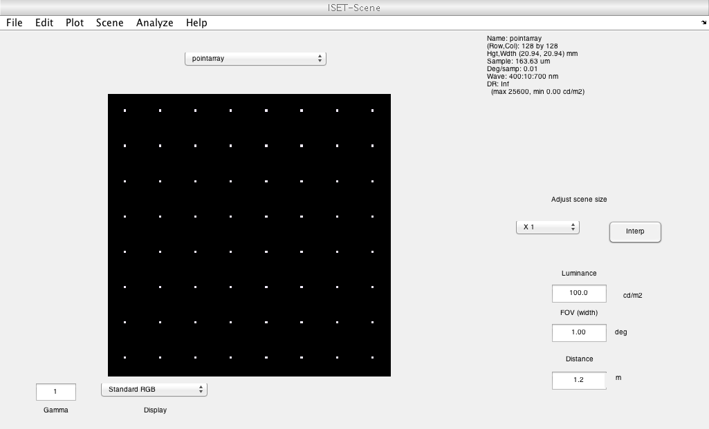
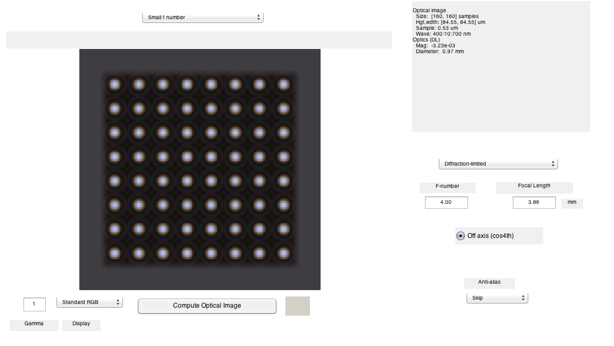
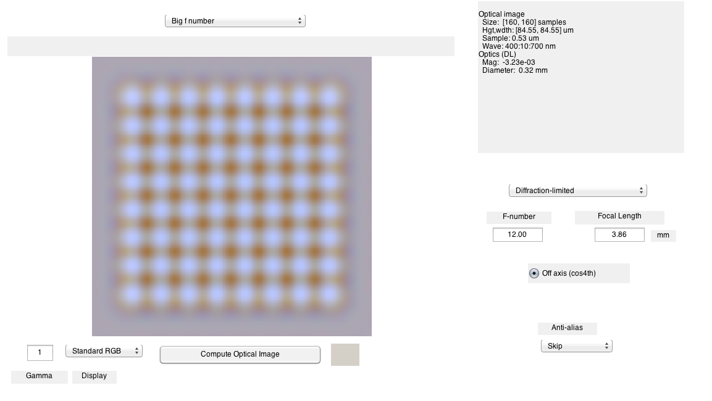
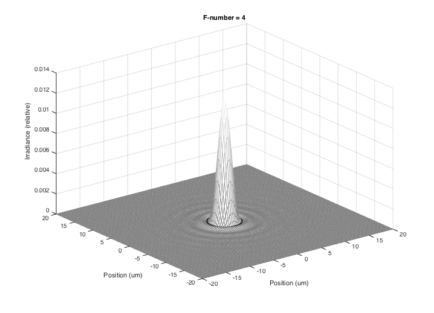
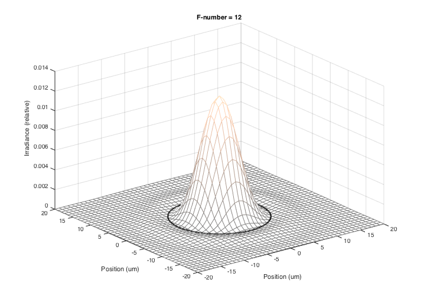
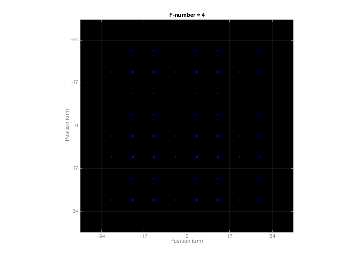
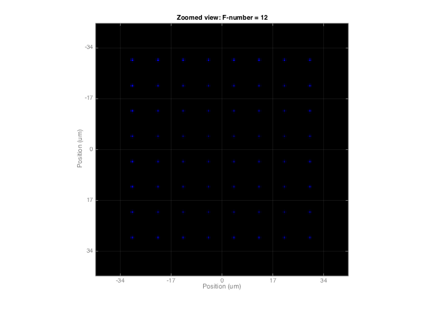
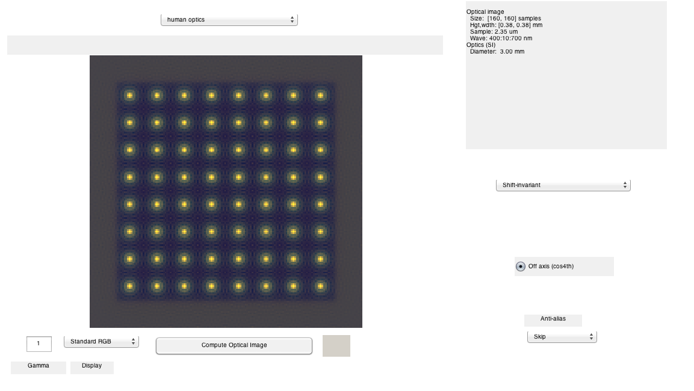

t_oiIntroduction.m
Introduction to ISET objects and functions: The optical image (OI)
ISET is organized around several key objects (scene, optics, sensor and processor) that reflect the important parts of the image acquisition pipeline. The ISET methods generally rely on calculating with these objects. By using these objects properly, the code and analysis are much easier to understand.
This tutorial introduces the ISET object "optical image" or OI. The OI describes the irradiance field at the sensor surface. It is computed from the scene (radiance), and the optics. The optics object is stored in a slot within the optical image.
Use t_"TAB KEY" to see the list of tutorials
Copyright ImagEval Consultants, LLC, 2012.
Contents
- Initialize ISET
- Create a point array scene
- Create and show an optical image
- Increase the f-number of the optics and compute again.
- Use plotOI to compare the two different optics
- Show the effect of the larger f/# on the PSF
- Use plotOI to quantify the optical image
- Plot an RGB representation of the new irradiance field
- Now, run using parameters from human optics
- End
Initialize ISET
ieInit;
Create a point array scene
This and other simple synthetic scenes are useful for examining simple optical properties
scene = sceneCreate('pointarray'); % Creates an array of points scene = sceneSet(scene,'hfov',1); % 1 deg field of view vcAddAndSelectObject(scene); sceneWindow;
Create and show an optical image
ISET has several optics models that you can experiment with. These include shift-invariant optics, in which there is a different shift-invariant pointspread function for each wavelength, and a ray-trace method, in which we read in data from Zemax and create a shift-variant set of pointspread functions along with a geometric distortion function. The default optical image has diffraction limited optics. We compute the irradiance field from the scene.
oi = oiCreate; oi = oiCompute(scene,oi); oi = oiSet(oi,'name','Small f number'); vcAddAndSelectObject(oi); oiWindow;
Increase the f-number of the optics and compute again.
Increasing the f-number of the optics will blur the irradiance image. The optics structure is attached to the optical image. To increase the f-number we get the optics object, set its' f number, and then reattach it to the optical image.
optics = oiGet(oi,'optics'); fnSmall = opticsGet(optics,'f number'); fnBig = 3*fnSmall; optics = opticsSet(optics,'fNumber',fnBig); oiBigF = oiSet(oi,'optics',optics); oiBigF = oiCompute(scene,oiBigF); oiBigF = oiSet(oiBigF,'name','Big f number'); % Name for the GUI vcAddAndSelectObject(oiBigF); oiWindow;
Use plotOI to compare the two different optics
In this case we plot the point spread function at 600 nm. First for the small f/#.
% Let's view this wavelength thisWave = 600; % Most ISET plotting routines can return the plotted data into a variable pData = plotOI(oi,'psf',[], thisWave); set(gca,'xlim',[-20 20],'ylim',[-20 20]) colormap(0.5*gray + 0.5*ones(size(gray))) title(sprintf('F-number = %d',fnSmall)) % Here are the values returned by plotOI pData
pData =
x: [200x200 double]
y: [200x200 double]
psf: [200x200 double]
 Show the effect of the larger f/# on the PSF
This is for the larger f/#. We just show a 20 um square region.
plotOI(oiBigF,'psf',[], thisWave); set(gca,'xlim',[-20 20],'ylim',[-20 20]) colormap(0.5*copper + 0.5*ones(size(copper))) title(sprintf('F-number = %d',fnBig)) % We can also get the plotted values from the figure pData = get(gcf,'userdata'); pData
pData =
x: [200x200 double]
y: [200x200 double]
psf: [200x200 double]
 Use plotOI to quantify the optical image
This example plots an RGB representation of the irradiance field in the optical image.
xy = []; % Irrelevant variable for this plot gSpacing = 17; % The grid spacing in microns plotOI(oi,'irradiance image with grid',xy,gSpacing); title(sprintf('F-number = %d',fnSmall))
Plot an RGB representation of the new irradiance field
xy = []; gSpacing = 17; plotOI(oiBigF,'irradiance image with grid',xy,gSpacing); title(sprintf('Zoomed view: F-number = %d',fnBig))
Now, run using parameters from human optics
The defcous of the human optics is quite surprising. In particular, the blurring of the short wavelength light is very extreme. That is illustrated in this example.
oiHuman = oiCreate('human'); oiHuman = oiCompute(scene,oiHuman); oiHuman = oiSet(oiHuman,'name','human optics'); vcAddAndSelectObject(oiHuman); oiWindow;